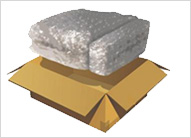

包装原则
1、适合运输：包装的目的在于防止和避免在运输中由于冲击或震动所产生的破损，兼顾防潮和防盗功能；
2、便于装卸：完好的包装将有利于货物的装卸，将有效地提高货物的装卸效率，同时能够避免由于第三方的野蛮装卸而可能给货物带来的损害；
3、适度包装：对货物进行包装时，要根据货物尺寸、重量和运输特性选用大小合适的包装箱及包装填充物，要尽量避免不足包装造成的货物破损和过度包装造成的包材浪费；
4、保护产品、防盗：包装在保证快件内容的使用特性和外观特性不被损坏的情况下，更要注意防盗——特别是对于高价值货物的包装；

5、包装件成一体：外包装要和快件的保护材料、缓冲材料和内容物成为一体，内容物之间（一个外包装内含有多个内容物时）或内容物与外包装内壁之间不应有磨擦、碰撞和挤压；
6、注意方向：对于有放置方向要求的货物，在包装、储存和运输过程中必须保证按照外包装上的箭头标识正确放置货物，杜绝侧放和倒放；
7、重心中心合一：包装件的重心和其几何中心应该合一或比较接近，这样可以防止货物在运输过程中由于起动、转弯和刹车给货物带来的损失。